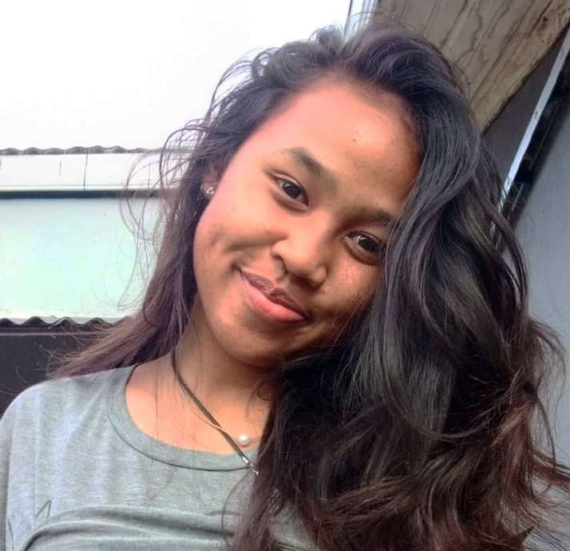

Tsiky Famenontsoa RAZEVASON
" Web designer "
CONTACT


FORMATION et DIPLÔME
CONNAISSANCES LINGUISTIQUES
| COMPREHENSION | EXPRESSION | |||
| Orale | Ecrite | Orale | Ecrite | |
| Français | Très Bien | Très Bien | Très Bien | Très Bien |
| Anglais | Bien | Bien | Moyenne | Moyenne |
| Allemand | Moyenne | Moyenne | Moyenne | Moyenne |
| Malagasy | Langue Maternelle | |||
DIVERS
- sport : Handball, Natation, Footing- Loisirs : jouer de la guitare, faire des randonnés
en Moto regarder des films et des documentaires,
surfer sur internet, lire des livres.
PROFILE
Je m'appelle RAZEVASON Tsiky Famenontsoa, connue sur le nom de Famenontsoa.
Née le 31 Août 2003 à Fianarantsoa, j'ai donc 19 ans.
Je poursuis une étude d'informatique à Fianarantsoa,
mais j'habite à Antananarivo dont l'adresse est "IL 10C Tana102".
je suis de nationalité MALAGASY, et je suis célibataire.
EXPERIENCES PROFESSIONNELLE
A partir de 2019: redactrice WEB
A partir de juin 2020: copywriters
A partir de janvier 2021: Assistante web
En octobre 2022: participation au frontend Awards 4ème éditions.
COMPETENCES EN INFORMATIQUE
Bureautique : Microsoft Word - Microsoft Excel - Internet
langages : HTML, CSS, JS, Python, PHP
QUALITES et DEFAUTS
- Mes qualités: dynamiques, souriantes, aime travailler en équipeponctuelle, sérieuse.
- Mes défauts: procrastination, impatiente, panique facilement